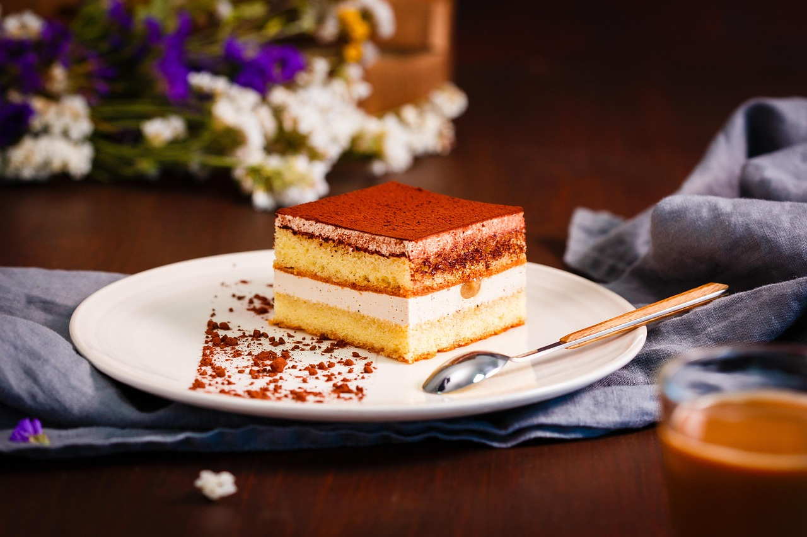

Italienisches Tiramisu
30 Min.
simpel
18.07.2025
| 250 g Mascarpone |
| 3 frische Eier |
| 100 g Zucker |
| 200 g Löffelbiskuits (Savoiardi) |
| 200 ml starker Espresso (abgekühlt) |
| 2–3 EL Amaretto oder Marsala (optional) |
| 1 Päckchen Vanillezucker |
| Kakaopulver zum Bestäuben |
Zubereitung
ca. 30 Minuten
Gesamtzeit ca. 3 Stunden (inkl. Kühlzeit)
Die Eier trennen und die Eigelbe mit Zucker und Vanillezucker schaumig schlagen. Anschließend Mascarpone unterrühren, bis eine glatte Creme entsteht. Die Eiweiße steif schlagen und vorsichtig unter die Creme heben. Den Espresso mit Amaretto oder Marsala vermischen. Die Löffelbiskuits kurz in die Flüssigkeit tauchen und den Boden einer Form damit auslegen. Die Hälfte der Creme darauf verteilen, dann eine zweite Schicht getränkter Biskuits und den Rest der Creme darüber geben. Das Tiramisu für mindestens 2–3 Stunden kalt stellen. Vor dem Servieren mit Kakaopulver bestäuben.
Rezept erstellt von
 Younes
Younes